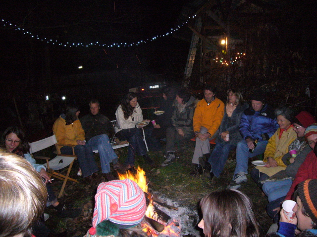
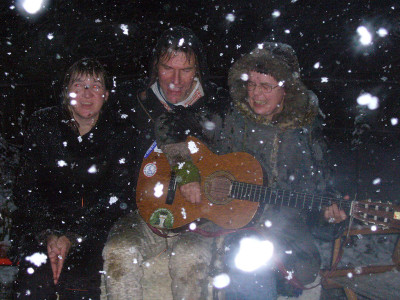
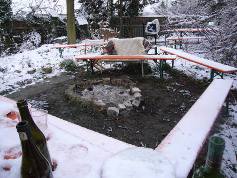
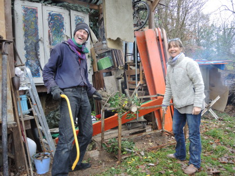
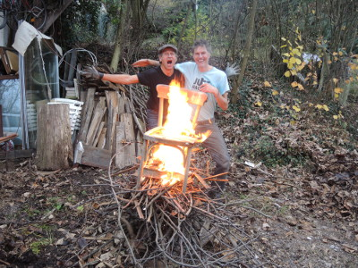
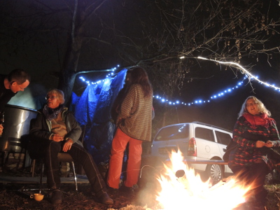
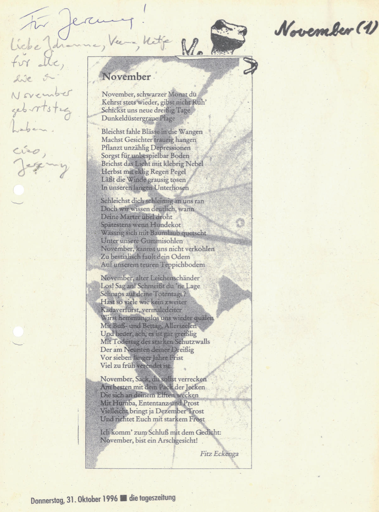
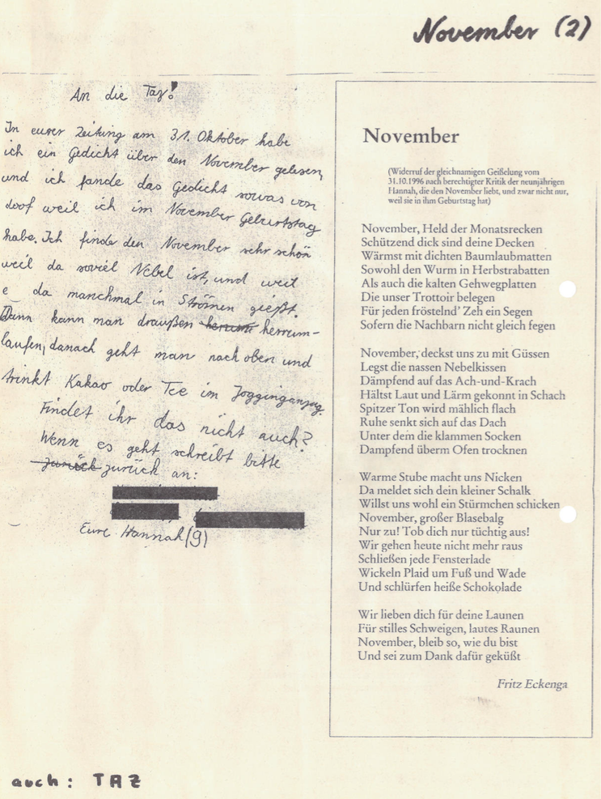

noch ist es windig warm und wunderbar, blauer himmel, sonnenklar.
bald wird es kaelter, nasser, grauer – wunderbar bleibts.
november feiern, verbunden und gluecklich sein: am samstag den 24.11.
mit grossem heissen feuer draussen und cooler musik im haus.
wir freuen uns ueber jeden kreativen beitrag, vor allem, was uns gemeinsam motiviert, zusammenbringt, verbindet.
darum geht es uns, das liegt uns am herzen.
bitte keine geschenke!
fuer getraenke und grundnahrung ist gesorgt.
bring gerne was leckeres fuers buffet mit, deine musik zum tanzen, alles was dir spass macht, vor allem dich selbst und dein so-sein wie du bist.
du kannst kommen und gehen wann du willst. wir freuen uns auch tagsueber ueber besuch; kaffee, tee und torten sind vorhanden.
es gibt keine bestimmte anfangszeit, uebernachtung ist problemlos moeglich, entweder im haus oder im ruhigen hotel elben nebenan.
du bist auch schon am freitag herzlich willkommen, z.b. wenn du von weiter her kommst, mithelfen willst, mehr von uns sehen magst, eine gemuetliche einstimmung geniessen und auch gar nichts tun willst oder es sonstwie fuer dich passt.
am sonntag den 25.11 machen wir eine schwitzhuette, entspannt und spirituell... dauer ca. 12:00 bis 24:00 uhr. wenn du daran interesse hast, melde dich bitte schnell und verbindlich, da nicht mehr als zehn menschen platz haben.
wir wuenschen dir wunderbare herbstwochen und freuen uns sehr, wenn du kommst.
liebe gruesse,
jeremy und moni

2008 mit Schnee:
  2015 und 2016:
  Erste, despektierliche version:
Leserbrief und die zweite, korrigierte version:
Entscheide dich fuer dein Glueck! – Make a conscious decision to be happy!
Jeremy's Notizen zum achtsames Leben und mein Ringen mit dem Lächeln – Jeremy's notes on mindful living and smiling to myself.